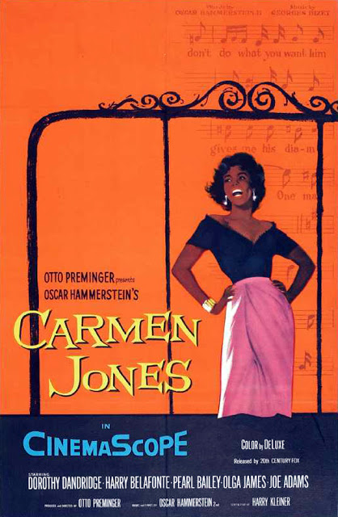
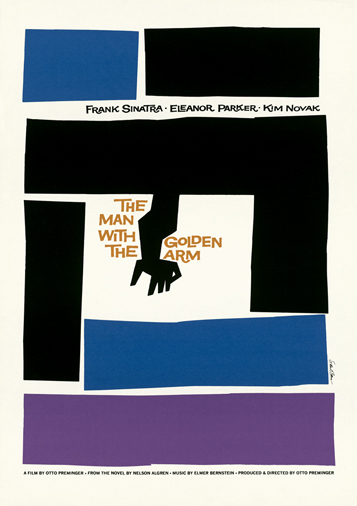

Contribution to Film
Bass first entered the world of Hollywood in the mid-1950s when the film world was undergoing incredible change; eventually, his contribution to film became a catalyst for this change. He found his place in the industry as an on-set visual consultant, working with many famous directors such as Alfred Hitchcock, Martin Scorsese, and Otto Preminger.
One of Saul's first big assignments as a designer came when he was offered the role to design a movie poster for legendary filmmaker, Otto Preminger. He designed the poster for the film, ‘Carmen Jones’ and received overwhelming praise for his creation. Preminger was so impressed by the poster and the feedback it received, that he commissioned Saul Bass to also design the opening titles for the film. After designing his first title sequence, Bass fell in love with the process. He wanted to bring life to graphics and film, and make titles a more enjoyable experience for the audience. This experience truly launched Bass’ motion graphics career.
“For the average audience, the credits tell them there’s only three minutes left to eat popcorn. I take this ‘dead’ period and try to do more than simply get rid of names that filmgoers aren’t interested in. I aim to set up the audience for what’s coming; make them expectant.”—Saul Bass [1]
Bass was the first person to realise the creative potential in the opening and closing credits of a film. Before this, the projectionist opened the cinema curtains after the movie titles had passed because they were so dull and boring. However, once ‘The Man With the Golden Arm’ arrived in cinemas across the US, there was a note taped to the reel saying, “Projectionists: pull curtain before titles.” Preminger wanted his audience to see ‘The Man with the Golden Arms’ opening title as an integral part of the film. The sequence featured a black cut out animated heroin addict’s arm. Bass knew that the arm was a very powerful image of drug abuse and addiction. Bass chose to use the arm rather than Frank Sinatra’s face as the main symbol for the movie poster and the opening titles. His powerful title sequence for ‘The Man with the Golden Arm’ changed the way both directors and designers would treat opening titles forever. He brought a new element to filmmaking during the sixties, fashioning title sequences into an art; a prologue to the movie, using a combination of intellect and emotion with a modernist-leaning approach.
“When his work comes up on the screen, the movie itself truly begins.” —Martin Scorsese [2]
") His title sequences were of similar style to his posters but with a more dynamic element. Saul revolutionised title sequences with his innovative design styles and unique typography techniques. Bass famously used ‘Kinetic Typography' combined with dominate primary colours to great effect. This form of typography is an animation technique mixing motion and text to express ideas using video animation. Early feature films contained traditional typography, but this was mostly static text, presented sequentially and transitions were done by hand.
His title sequences were of similar style to his posters but with a more dynamic element. Saul revolutionised title sequences with his innovative design styles and unique typography techniques. Bass famously used ‘Kinetic Typography' combined with dominate primary colours to great effect. This form of typography is an animation technique mixing motion and text to express ideas using video animation. Early feature films contained traditional typography, but this was mostly static text, presented sequentially and transitions were done by hand.
Many recognise the first feature film to extensively use kinetic typography as Alfred Hitchcock's North by Northwest (1959). As we know, this film's opening title sequence was created by Saul Bass, featuring animated credits that "flew" in from off-screen, and finally faded out into the film itself. A similar technique was also used by Bass in Psycho (1960). Saul Bass created title sequences for more than 50 motion pictures during his 50-year career, yet his work always remained both new and provocative. His craft always held a sophisticated message in every design he worked on, simplistic on the surface but with a very significant underlying meaning. All of his work reflected his minimalistic style, modernist approach and use of vibrant primary colours to create emphasis across all of his pieces. He revamped the aesthetics of film forever: his style is still emulated today.
“Saul Bass wasn’t just an artist who contributed to the first several minutes of some of the greatest movies in history; in my opinion, his body of work qualifies him as one of the best film makers of this, or any other time.”—Steven Spielberg [3]